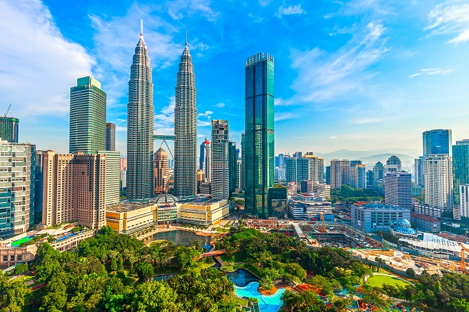
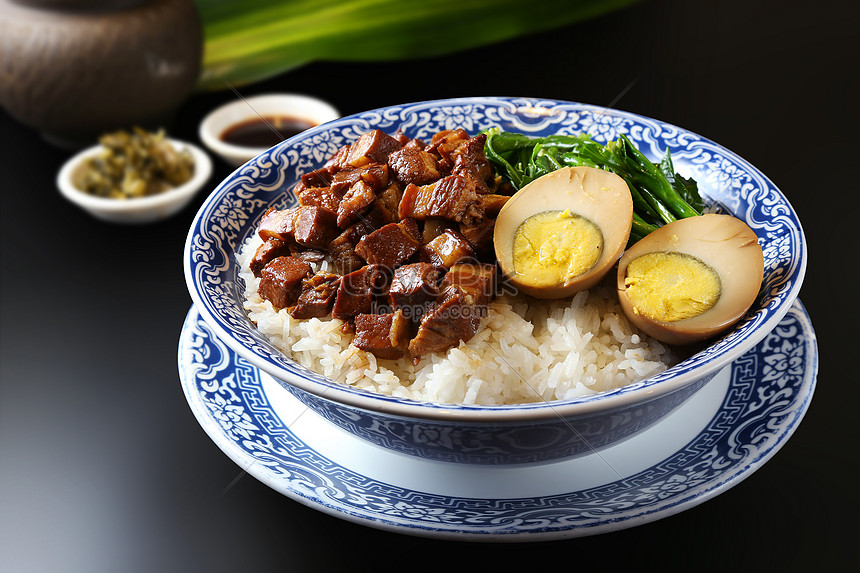
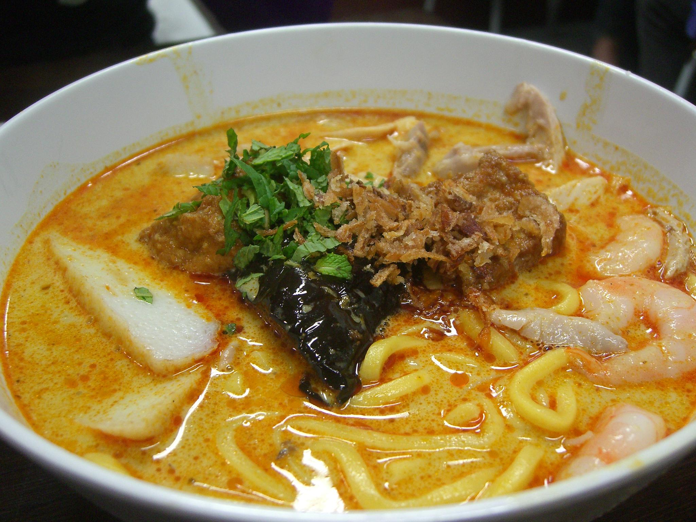
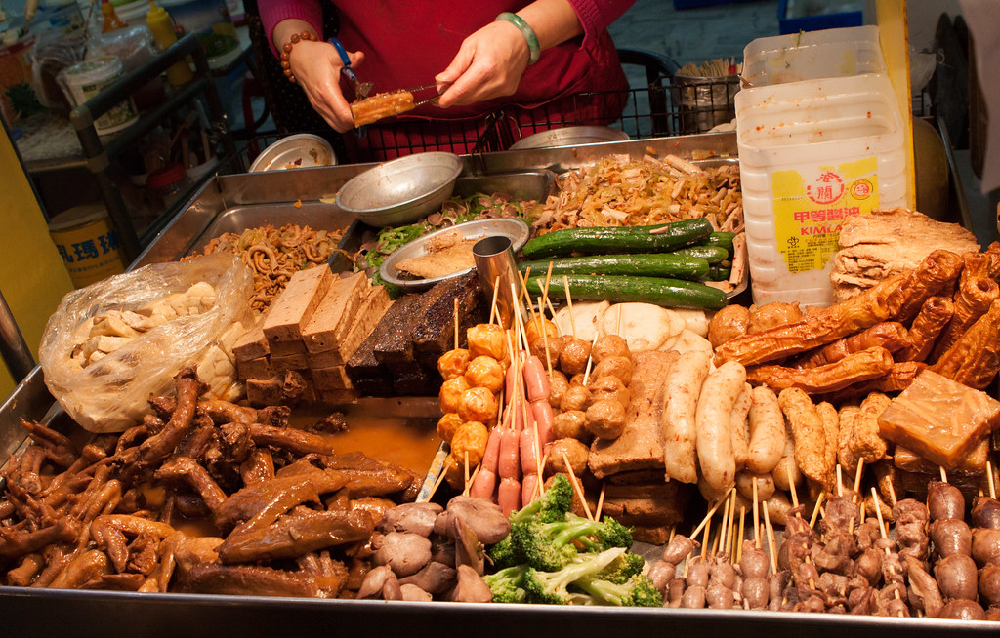
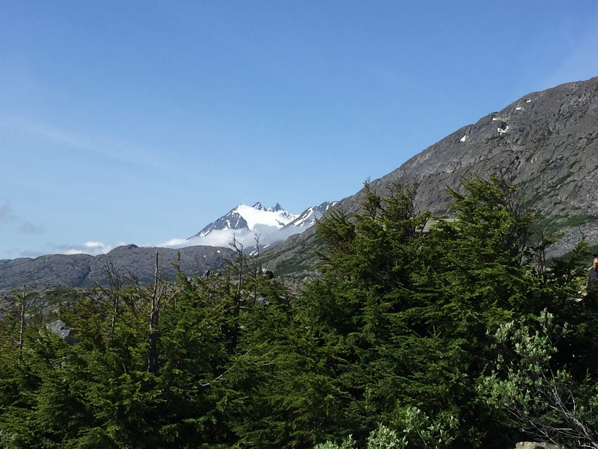
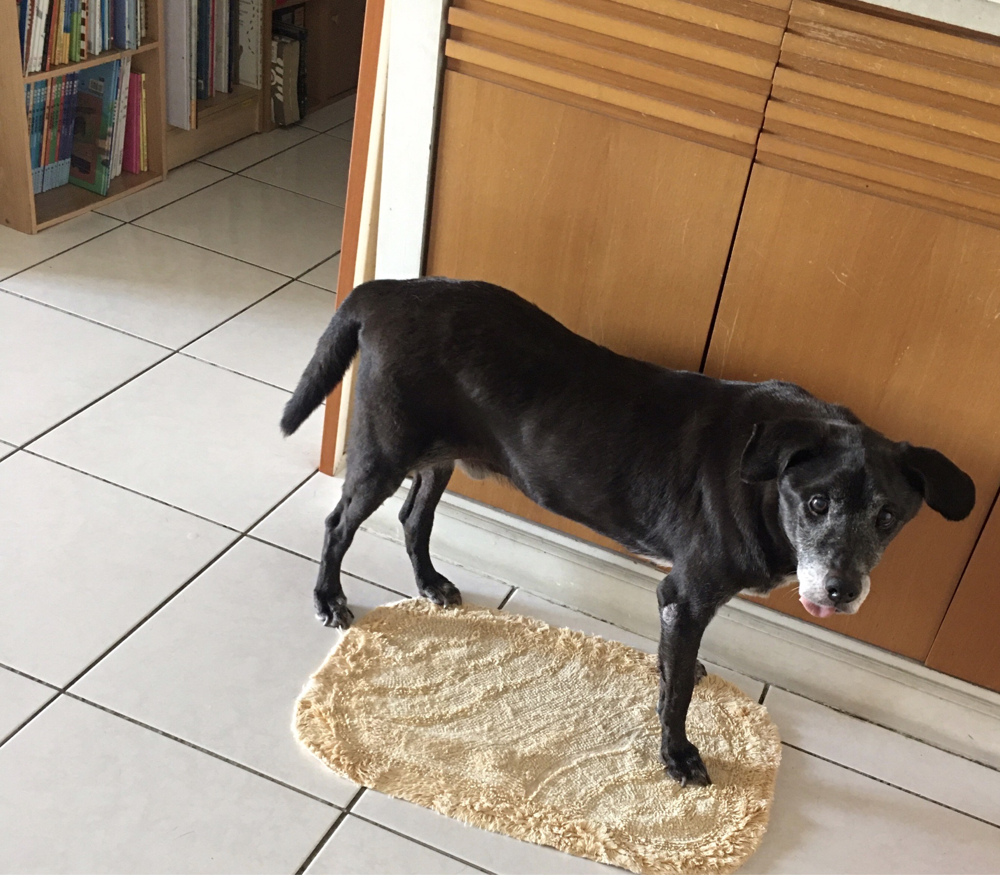

Jia-Tong Choo
A little about me
I am currently enrolled as a junior in the School of Information at the University of Michigan pursuing a Bachelor of Science in Information with an Information Analysis path and am expecting to graduate in May 2023.
Early 2021, I became one of the co-founder of "Center of Directions Control" podcast (conducted in Mandarin), where we discuss topics surrounding by studying abroad. Click this to check it out!
In my free time, I like to go out in the nature to explore the beauty of our mother nature. I also enjoying travelling around to get myself experience different cultures.
Nine pictures that tells more about me






